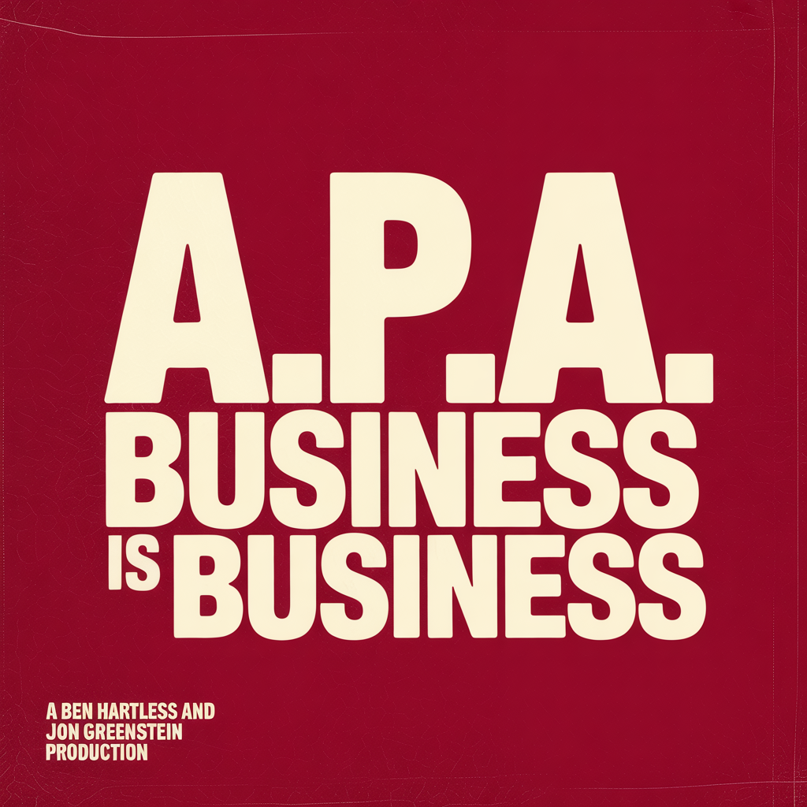

Hardcore Hip-Hop / Boom-Bap • Acolytes Protection Agency
A.P.A. (Acolytes Protection Agency) is the solo project of an unnamed fifty-one-year-old career bouncer-turned-bar-owner from a forgotten East Coast town. Career highlights: twenty-three years standing the door at every kind of bar, surviving his brother's forty-year prison sentence, raising kids through college, paying off his mother's house, and refusing every offer to leave the trade.
A.P.A.'s music is built around a single voice: ultra-gravelly DMX-style snarl, raspy bark in the verses, full-throat yelled "DAMN!" reactions when the moment demands it, and reverent prayer when his fallen brothers are the subject. Authentic struggle/dominance hip-hop. Real talk over crushing boom-bap, modern trap halftime, and one heavy metal-rap fusion. The wrestling tribute is the door. The album is the room.
Influences: DMX, Mobb Deep, Nas (Illmatic), Common, late Tupac.

A.P.A.'s debut album. Eleven tracks of authentic DMX-style range: bangers, story tracks, a prayer, a mother tribute, a metal-rap collab with MACH-6, a triumphant closer, and one of the most absurd late-night-diner reaction tracks ever recorded ("TASTY BURGA"). Every chorus that needs it lands on a thunderous yelled "DAMN!"
From the opening "DAMN!" reaction-track banger to the "3 Job Mama" jazz-piano tribute to the spiritual reckoning of "Pour Up" to the closing anthem "Still Standing," every track sounds like a fifty-one-year-old career bouncer who came up from nothing and is finally telling you what he saw.
Listen to Album →